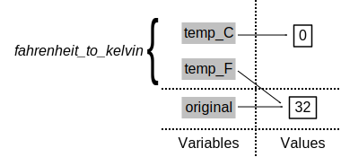
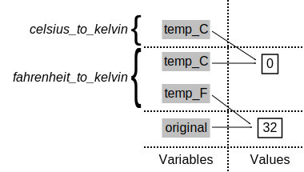
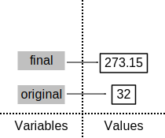

The Call Stack
Overview
Teaching: 15 min
Exercises: 0 minQuestions
What is the call stack, and how does R know what order to do things in?
How does scope work in R?
Objectives
Explain how stack frames are created and destroyed as functions are called.
Correctly identify the scope of a function’s local variables.
Explain variable scope in terms of the call stack.
The Call Stack
Let’s take a closer look at what happens when we call fahrenheit_to_kelvin(32).
To make things clearer,
we’ll start by putting the initial value 32 in a variable and store the final result in one as well:
original <- 32
final <- fahrenheit_to_kelvin(original)
The diagram below shows what memory looks like after the first line has been executed:

When we call fahrenheit_to_kelvin, R doesn’t create the variable temp_F right away.
Instead, it creates something called a stack frame to keep track of the variables defined by fahrenheit_to_kelvin.
Initially, this stack frame only holds the value of temp_F:

When we call fahrenheit_to_celsius inside fahrenheit_to_kelvin, R creates another stack frame to hold fahrenheit_to_celsius’s variables:

It does this because there are now two variables in play called temp_F: the argument to fahrenheit_to_celsius, and the argument to fahrenheit_to_kelvin.
Having two variables with the same name in the same part of the program would be ambiguous, so R (and every other modern programming language) creates a new stack frame for each function call to keep that function’s variables separate from those defined by other functions.
When the call to fahrenheit_to_celsius returns a value, R throws away fahrenheit_to_celsius’s stack frame and creates a new variable in the stack frame for fahrenheit_to_kelvin to hold the temperature in Celsius:

It then calls celsius_to_kelvin, which means it creates a stack frame to hold that function’s variables:

Once again, R throws away that stack frame when celsius_to_kelvin is done
and creates the variable temp_K in the stack frame for fahrenheit_to_kelvin:

Finally, when fahrenheit_to_kelvin is done, R throws away its stack frame and puts its result in a new variable called final that lives in the stack frame we started with:

This final stack frame is always there;
it holds the variables we defined outside the functions in our code.
What it doesn’t hold is the variables that were in the various stack frames.
If we try to get the value of temp_F after our functions have finished running, R tells us that there’s no such thing:
temp_F
Error in eval(expr, envir, enclos): object 'temp_F' not found
Where to Learn More
The explanation of the stack frame above was very general and the basic concept will help you understand most languages you try to program with. However, R has some unique aspects that can be exploited when performing more complicated operations. We will not be writing anything that requires knowledge of these more advanced concepts. In the future when you are comfortable writing functions in R, you can learn more by reading the R Language Manual or this chapter from Advanced R Programming by Hadley Wickham. For context, R uses the terminology “environments” instead of frames.
Why go to all this trouble? Well, here’s a function called span that calculates the difference between the minimum and maximum values in an array:
span <- function(a) {
diff <- max(a) - min(a)
return(diff)
}
dat <- read.csv(file = "data/inflammation-01.csv", header = FALSE)
# span of inflammation data
span(dat)
[1] 20
Notice span assigns a value to variable called diff. We might very well use a variable with the same name (diff) to hold the inflammation data:
diff <- read.csv(file = "data/inflammation-01.csv", header = FALSE)
# span of inflammation data
span(diff)
[1] 20
We don’t expect the variable diff to have the value 20 after this function call, so the name diff cannot refer to the same variable defined inside span as it does in the main body of our program (which R refers to as the global environment).
And yes, we could probably choose a different name than diff for our variable in this case, but we don’t want to have to read every line of code of the R functions we call to see what variable names they use, just in case they change the values of our variables.
The big idea here is encapsulation, and it’s the key to writing correct, comprehensible programs. A function’s job is to turn several operations into one so that we can think about a single function call instead of a dozen or a hundred statements each time we want to do something. That only works if functions don’t interfere with each other; if they do, we have to pay attention to the details once again, which quickly overloads our short-term memory.
Following the Call Stack
We previously wrote functions called
highlightandedges. Draw a diagram showing how the call stack changes when we run the following:inner_vec <- "carbon" outer_vec <- "+" result <- edges(highlight(inner_vec, outer_vec))
Key Points
R keeps track of active function calls using a call stack comprised of stack frames.
Only global variables and variables in the current stack frame can be accessed directly.